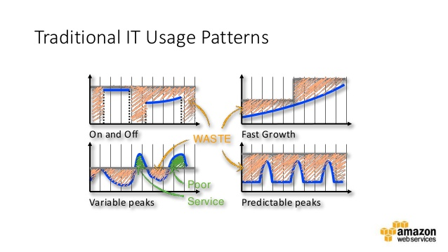
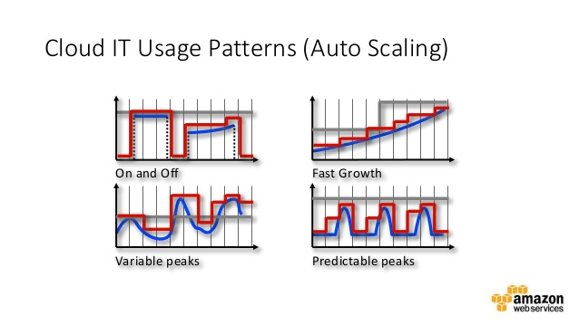

How to optimise cost in Startup with Spot Instances?
JAWS DAYS 2016
Minyoung Jeong(鄭敏泳) / Dohyun Jung(鄭道鉉)
発表者の紹介
TBD
TBD
TBD
アマゾンウェブサービス 韓国ユーザ会
AWSKRUG
Tokyo Region 設立後、韓国からもAWSについて関心が 高まり始め、 2011年 11月 IRCから活動開始
2012年 2月フェースグックグループを開設後、 2016年3月現在、およそ 6,700人の会員が活動中
2015年 11月 Seoul Region ランチングで盛り上がり中！
重要活動
セミナー開催
re:Invent reCap
年 3~4回に会員発表セミナー開催
勉強会サポート
AWSに関心が高まり入門者急上昇中！
主に入門者向けの勉強家を開き、AWSクレジットなどをサポート
DevDay
AWS Koreaと一緒に開く技術セミナー
AWS 新製品紹介、ベスト・プラクティスの紹介など
awskr.org
BEAT
TBD
TBD
TBD
BEATが考えたAWS利用の原則
適切な規模のリソースを利用する
必要最低限のリソースのみ利用する
適切か規模のリソースを利用する
EC2 インスタンスの値段の差は800倍
適切なインスタンス Typeを選択することがすごく大事
Class (t,m,c,g,r,i,d) の特性
ウェブサーバ、Cacheサーバ、DBサーバに対し、異なるインスタンスタイプが必要
できれば、最新のインスタンスタイプを使うのがコストパフォマンスに有利
ただし、C3/C4, M3/M4の場合、もう一つの追加考慮事項が存在する
Instance-Storage vs EBS
C/Mの場合、第３世代まではInstance-Storageが
提供されるが、
第４世代からはEBSだけ提供される
第３世帯に提供されるInstance-Storageは1~2個のSSD
Instance-StorageはEBS対比7~10倍の性能
永続性がない代わりに性能と費用が抜群
データ複製などで永続性の問題を補完できる場合、
I/O性能が大事であれば第３世代の使用を考慮する必要がある
T2インスタンス
Burstがない、または予測可能なサービスに適用
CloudWatchなどを通じたCPU使用率モニタリングで適切なT2インスタンスへの転換を実施し、 2~30%程度のコストダウンが可能
特にM3/M4インスタンスに対して重点的に検討
Lambda
Image Resize, Encodingのような作業はインスタンスが通常待機する必要がない作業
Lambdaは100ms単位で課金するため必要時のみ運用すれば大幅のコストダウンが可能
必要最低限のリソースのみ利用する。

いつも需要(Load)に対して適切なリソースを利用しなければならない

AutoScale
AutoScale
指定した条件によってInstanceの数を自動的に調整
Cloudwatch Alarm, Scheduled Policy
Spot Instance適用可能
AutoScale + Spot Instance
EC2コストダウンの切り札Spot Instance

EC2の遊休資源をAvailability Zoneことのオークションを通じて利用
オークションを通じて利用するため、
インスタンスのライフサイクルを
任意で統制できない
ただし、On-Demand対比最大90%水準まで安価で利用可能
入札(Bid)戦力
어떻게 입찰해야 가장 효율적인가?

Availability Zone마다 가격이 다르다

Instance Type마다 가격이 다르다

특정 Spike를 제외하면 On-Demand 보다 가격이 낮게 유지
BEAT에서는, On-Demand 가격의 100%로 입찰
입찰가는 최고 가격이므로, 해당 시점의 최저가에 낙찰
Spot이 없으면?
경매 가격이 너무 높거나, 유휴 자원이 없는 경
Spot Instance를 확보하지 못하게 된다.
안정적인 서비스 운영을 위해서 이럴 경우 어떻게 해야 할까?
AutoScale + Spot Instance
하나의 ELB에 2개의 Autoscale group을 운영
각 On-Demand(RI)와 Spot Instance로 설정된 그룹
CPU혹은 Latency를 기준으로 Scale In/Out
On-Demand Group은 빠르게 Scale-In, 늦게 Scale-Out
Spot Group은 빠르게 Scale-Out, 늦게 Scale-In
CPU 기준
| Scale-In | Scale-Out | |
|---|---|---|
| Spot | 20%/1hr | 40%/5min |
| On-Demand | 40%/10min | 80%/5min |

시간대별 Traffic

Traffic 최저점 대비 5~10% 정도를 On-Deamnd

나머지 부분을 5~10% 정도 여유로 Spot Instance

만약 원하는 만큼 Spot Instance 확보가 안된경우

Scaling Policy에 의해 On-Deamnd가 Scale-Out
Scheduled Policy
서비스 Traffic pattern에 따라,
시간대 별로 시간대 별로 Minimum을 조정
Peak 시간대 Spot: 40~ On-Deamdn: 10~
Off 시간대 Spot: 10~ On-Deamnd: 2~

혹은, 매일 Peak 시작전에 사전 Warm-Up에 이용
Wrap Up
- 적절한 Instance Type을 사용
- 같은 EC2 사용에서도 성능:비용을 고려
- AutoScaling을 통한 적극적인 Spot-Instance 사용
ありがとうございます!
- Q&A
- AWSKRUG
- kkungkkung @ gmail.com